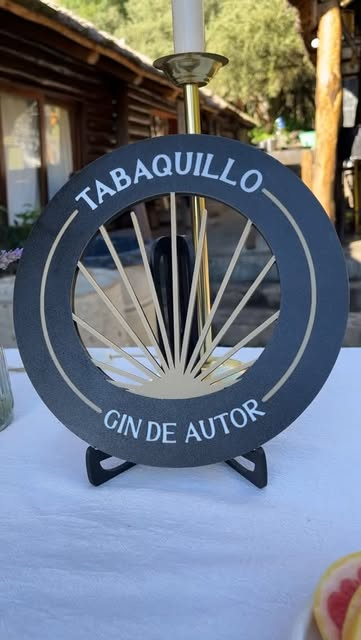
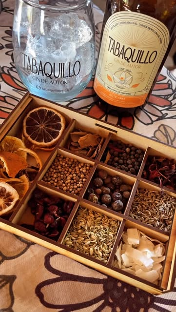
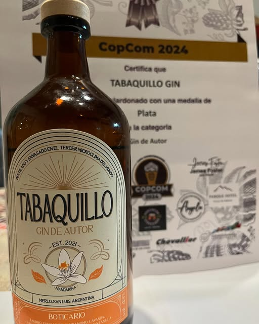

El microclima
Merlo es célebre por su aire: un valle al pie de los Comechingones donde la presión, la ionización y la amplitud térmica arman una condición rara. Acá se destila y acá se envasa, como dice la etiqueta.
Merlo · San Luis · Argentina
¿Sos mayor de 18?
Para entrar tenés que ser mayor de edad. Beber con moderación.
Volvé cuando cumplas los 18. Te esperamos en las sierras.
Gin de autor · Sierras de los Comechingones · Est. 2021
Medalla de Plata · CopCom 2024 · categoría Gin de Autor
01 — El origen

Merlo es célebre por su aire: un valle al pie de los Comechingones donde la presión, la ionización y la amplitud térmica arman una condición rara. Acá se destila y acá se envasa, como dice la etiqueta.
El árbol que nos da el nombre crece más alto que ningún otro en estas sierras, de corteza en láminas finas y raíz terca. Un bosque que aguanta el frío, el viento y la altura. Nos pareció un buen apellido.
Lotes chicos, receta propia, botella ámbar y corcho. «De autor» no es una categoría de marketing: es una firma. Cada partida se prueba antes de salir, y si no está, no sale.
02 — La colección
Dos destilados que comparten casa y no se parecen en nada. Pasá el cursor —o tocá— para ver qué lleva cada uno.
Boticario
Herbáceo y seco. La cáscara de limón levanta, la manzanilla redondea, el cannabis deja la firma vegetal al final.
Ver botánicos
Boticario · Cannabis
Copa balón, mucho hielo, 50 ml. Tónica seca y una tira larga de piel de limón, retorcida sobre el vaso.
Pedir esta botellaBoticario
Cítrico y floral. Entra dulce por la mandarina, la lavanda lo estira y el enebro lo trae de vuelta a tierra.
Ver botánicos
Boticario · Mandarina
Copa balón, mucho hielo, 50 ml. Tónica neutra, media rodaja de mandarina y una rama de lavanda golpeada.
Pedir esta botella03 — El botiquín
La despensa de la que salen las dos recetas. Seguí bajando: el estante se mueve solo.
04 — El ritual
Al freezer diez minutos. Si la copa está tibia, el hielo se rinde antes del primer sorbo.
Cubos grandes y muchos. Poco hielo derrite más rápido: contra toda intuición, más hielo aguada menos.
Servido sobre el hielo, sin apuro. Olé la copa antes de seguir: ahí está la mitad del gin.
Volcada por la cuchara para no matar el gas. Limón para el Cannabis, mandarina y lavanda para el otro.


05 — El reconocimiento
«Medalla de Plata, categoría Gin de Autor.»
CopCom 2024
Lo dejamos acá porque es lo único que dice alguien que no somos nosotros. El resto de esta página lo escribimos nosotros, así que descontá lo que corresponda.
06 — Dónde encontrarlo
Estamos en góndola, en carta y en la puerta de casa. Si tu ciudad no está en la lista, escribinos igual: llegamos por encomienda.
San Luis · casa matriz
San Luis
Buenos Aires
Buenos Aires
Buenos Aires
Mandamos a todo el país.
Consultar envío07 — Pedidos
Botella suelta, caja para regalo, carta de bar o distribución por zona. Completá y se abre WhatsApp con el mensaje ya redactado.
Merlo, San Luis, Argentina